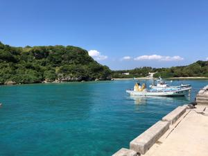
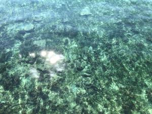
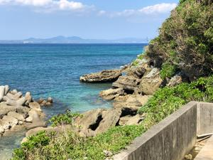
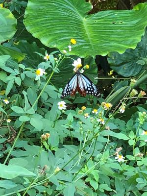

うるがいの話 ある日
最新: スマホ決済サービスを使ううるがいとは 前提知識です
カニの画像をクリックすると『うるがいの話』サイトを表示します|
|
【うるがいの話】 うるがい(ｳﾙｶﾞｲ urugai)とは、『もずくがに』の名前でとても大きくなります。 |
|---|---|
|
|
【Got cat カミマヤーの話】 たながー（ﾀﾅｶﾞｰtanagaa）とは手長えびのことで、何種類かあり大きいのは車 エビぐらいになります。 |

|
【ぶながぁの話】 ぶながー(bunagaa)とは、赤い髪の毛、赤い身体、そして身長は１ｍ２０ｃｍ ぐらい、川の蟹を食べているの目撃された。場所は沖縄県国頭郡大宜味村のと ある村僕の隣近所に住んでいる爺さんから、聞いた話です。 |
|
|
【ギーマの話】 ギーマ(giima)とは、山原の里山に咲くスズランに似た、 花を付けます。実は食べられます、 気が付くと口の周りが紫になっています。 |
2021年11月12日 (金）スマホ決済サービスを使う
17:48
   
スマホのＰａｙアプリを使ってサンエーで買い物をした。ほほ、依然からやっ
てみたいと思っていたが、必要性が無かったので。スマホのポイントが溜まっ
ているので、これを利用するにはと調べる。ポイントをＰａｙアプリにチャー
ジすればいいと分かる。ひと月に２万ポイントの制限一杯で２万円分をチャー
ジした。さて、使ってみようとこれもネットで調べ準備万端。レジでＰａｙア
プリで表示しているバーコードをレジのスキャナーで読み込ませ、終了！。お
お、チャージの金額がその分減っている、さらにメールで利用した店舗などの
利用状況が通知される。ほほ、便利ジャン。出張の度に同行していた職場のウ
ラさんが、スマホで清算するのを横目でいつも見ていた（カッコイイ）。ある
とき同じホテルで宿泊したが、同じ条件でスマホの決済のためウラさんの宿泊
料金が安くなったケースがあった。旅費精算の時、なぜ値段が違うのかと聞か
れた。写真は先月行った伊計島の綺麗な海である、いまも綺麗のままだろうか
綺麗な写真のネタがまだあるので、明日も載せるか。